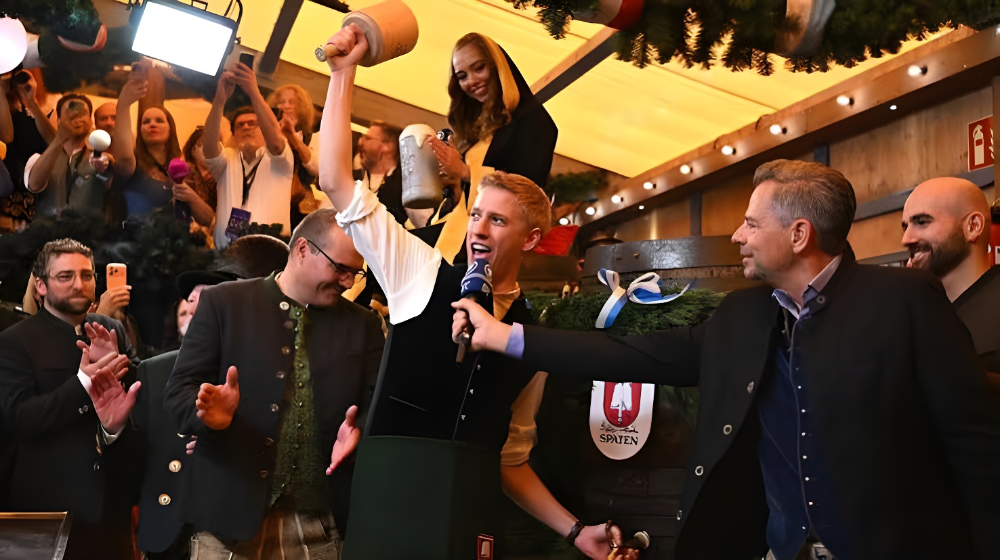

Samedi 19 septembre 2026, à midi pile, Dominik Krause a percé le premier fût de bière sous la tente Schottenhamel en seulement deux coups de maillet et ouvert ainsi la 191e édition de l'Oktoberfest, qui se tient à Munich jusqu'au 4 octobre. Pour sa première apparition en tant que maire, l'écologiste de 36 ans, élu en mars face au sortant social-démocrate Dieter Reiter, a tendu la première chope au ministre-président bavarois Markus Söder (CSU), sous un soleil éclatant. Cette ouverture, marquée par un moment de recueillement en mémoire des victimes de l'attentat de 1980 et par un dispositif de sécurité renforcé après les débordements de 2025, place la plus grande fête populaire du monde sous le signe d'un nouveau chapitre politique pour la capitale bavaroise.
En fin de matinée, le défilé des Wiesnwirte (les exploitants des tentes) et des brasseries quitte le centre-ville pour la Theresienwiese : cinquante attelages et environ un millier de participants, conduits pour la première fois par la nouvelle Münchner Kindl, Sina Hochreiter, figure emblématique de la ville, qui ouvre le cortège à cheval. Le maire prend place dans une calèche, accompagné de son fiancé Sebastian Müller, conformément à la tradition qui veut que l'édile entre sous la tente avec son partenaire. Sous un ciel dégagé et environ 24 °C, la police dénombre quelque 55 000 spectateurs le long du parcours, contre environ 40 000 l'an passé.
À midi, dans la loge réservée au perçage de la Schottenhamel, la plus ancienne des grandes tentes, Dominik Krause plante le robinet en deux coups seulement. Il égale ainsi le record détenu par ses prédécesseurs Christian Ude et Dieter Reiter et laisse loin derrière lui les dix-sept coups de Thomas Wimmer, qui inaugura le rituel en 1950. Il lance le traditionnel « O'zapft is! » (« c'est percé ! ») suivi d'un « Auf eine friedliche Wiesn! » (« pour une Wiesn paisible »), puis remet la première Maß à Markus Söder, une coutume observée depuis 1980. Douze salves de canon devant la statue de la Bavaria signalent alors aux autres tentes que la bière peut couler.
Ce rituel s'inscrit dans une fête née en 1810 d'un mariage princier : les noces du prince héritier Louis, futur Louis Ier de Bavière, et de Thérèse de Saxe-Hildburghausen furent couronnées par une course de chevaux sur une prairie baptisée « Theresienwiese », d'où le surnom de « Wiesn » donné aujourd'hui à l'Oktoberfest.
Des files d'attente se forment dès avant 5 h du matin devant les entrées, qui ouvrent peu après 9 h. Les premiers arrivés courent vers les tentes pour s'assurer une place, mais la bière reste interdite jusqu'au perçage du fût : dès 10 h, seuls les petits plats et les boissons sans alcool sont servis.
Cinquante attelages rejoignent la Theresienwiese. À l'entrée principale, le maire s'arrête devant le mémorial de l'attentat du 26 septembre 1980, en compagnie de ses deux adjointes Mona Fuchs et Verena Dietl.
En deux coups de maillet, Dominik Krause perce le fût de la Schottenhamel et lance « O'zapft is! ». Douze salves de canon annoncent aux autres tentes que le service de la bière peut commencer.
Plusieurs tentes affichent complet. Le directeur de la fête, Christian Scharpf, parle d'un « Bilderbuchstart » (un départ « de carte postale ») et la police ne signale aucun incident notable jusqu'en début d'après-midi.
Le lendemain, le cortège des costumes traditionnels et des sociétés de tir, organisé depuis 1835, doit réunir 8 267 participants issus de 148 groupes sur sept kilomètres, de la Maximilianstraße à la Theresienwiese.
L'arrivée de Dominik Krause à la tête de la ville marque une rupture. Physicien de formation, né à Munich en 1990, il a battu au second tour des municipales, le 22 mars, le maire sortant social-démocrate Dieter Reiter, en fonction depuis douze ans, avec 56,4 % des voix contre 43,6 %. Devenu le premier écologiste à diriger la capitale bavaroise, il a pris ses fonctions le 1er mai. Sa première Wiesn était donc scrutée de près, d'autant que sa rencontre avec Markus Söder, chef du gouvernement bavarois et figure de la CSU, était très attendue. Le ministre-président a salué une prestation « très professionnelle », et les deux hommes ont affiché leur bonne entente autour de la candidature de Munich à l'organisation des Jeux olympiques, dont la sélection nationale sera tranchée le 26 septembre par le Comité olympique allemand (DOSB) à Baden-Baden.
Le nouveau maire a aussi introduit un geste inédit : avant de rejoindre la tente, il a fait halte devant le mémorial de l'attentat d'extrême droite de 1980, le plus grave de l'histoire de la République fédérale, qui a fait treize morts, dont son auteur, et plus de 200 blessés. Il a expliqué vouloir montrer que ce souvenir fait partie de l'Oktoberfest.
| Acteur | Position |
|---|---|
| Dominik Krause | Maire écologiste de Munich depuis le 1er mai 2026, il perce son premier fût en deux coups |
| Markus Söder | Ministre-président de Bavière (CSU), il reçoit la première Maß, comme chaque année depuis 1980 |
| Christian Scharpf | Directeur de la fête (Wiesn-Chef), social-démocrate, il salue un « Bilderbuchstart » |
| Dieter Reiter | Prédécesseur social-démocrate de Krause, co-détenteur du record de deux coups |
| Thomas Wimmer | Maire de Munich à l'origine du rituel en 1950, il avait eu besoin de dix-sept coups |
« À la Wiesn, il n'y a en fait pas de couleurs de parti : ici, tout le monde se retrouve. »
— Dominik Krause, 19 septembre 2026L'an dernier, la fête avait accueilli 6,5 millions de visiteurs (6,7 millions en 2024, 7,2 millions en 2023) au cours d'une édition chaotique : une menace à la bombe avait paralysé le site pendant des heures, et celui-ci avait dû être fermé à deux reprises pour cause d'affluence excessive, dont le second samedi, où la foule avait failli virer à la panique. Pour 2026, la ville et la police ont revu leur dispositif : environ 600 policiers, plus de cinquante caméras couplées à un logiciel d'analyse d'images par intelligence artificielle (conçu par l'institut Fraunhofer) qui mesure la densité de la foule en temps réel sans identifier les personnes, un « crowd spotter » chargé de piloter les flux et de diffuser des annonces les jours de forte affluence, et une nouvelle cellule de coordination sur le site. S'y ajoutent les contrôles à l'entrée, la limite de trois litres pour les sacs, l'interdiction des couteaux et une zone d'interdiction de survol mieux surveillée face aux drones. Le ministre bavarois de l'Intérieur, Joachim Herrmann, indique qu'aucune menace concrète n'est connue.
À Munich, le perçage du premier fût est traditionnellement un exercice d'image pour le maire ; cette année, il prend valeur de passage de témoin. En deux frappes, Dominik Krause a réussi un exercice très scruté, tout en y ajoutant un geste de mémoire envers les victimes de 1980. Mais l'épreuve est loin d'être terminée : c'est durant les deux semaines à venir que se jugera l'efficacité du nouveau dispositif de gestion des foules, en particulier le samedi 26 septembre, jour d'affluence, quarante-sixième anniversaire de l'attentat et date de la désignation du candidat olympique allemand. Après l'année 2025, la plus grande fête populaire du monde, qui attire chaque année plus de six millions de visiteurs, doit surtout retrouver sa sérénité.
Am Samstag, den 19. September 2026, hat Dominik Krause um Punkt 12 Uhr im Festzelt Schottenhamel das erste Fass Bier mit nur zwei Schlägen angezapft und damit das 191. Oktoberfest eröffnet, das noch bis zum 4. Oktober in München stattfindet. Bei seinem ersten Auftritt als Oberbürgermeister reichte der 36-jährige Grünen-Politiker, der im März den amtierenden Sozialdemokraten Dieter Reiter besiegt hatte, die erste Maß bei strahlendem Sonnenschein an den bayerischen Ministerpräsidenten Markus Söder (CSU). Die Eröffnung, geprägt von einem Gedenken an die Opfer des Anschlags von 1980 und von einem nach den Überfüllungen des Jahres 2025 verschärften Sicherheitskonzept, stellt das größte Volksfest der Welt unter das Zeichen eines neuen politischen Kapitels für die bayerische Landeshauptstadt.
Am späten Vormittag zieht der Einzug der Wiesnwirte und der Brauereien aus der Innenstadt zur Theresienwiese: fünfzig Gespanne und rund tausend Teilnehmer, erstmals angeführt vom neuen Münchner Kindl Sina Hochreiter, der Symbolfigur der Stadt, die den Zug hoch zu Ross eröffnet. Der Oberbürgermeister fährt in einer Festkutsche mit, begleitet von seinem Verlobten Sebastian Müller, denn der Tradition zufolge zieht das Stadtoberhaupt mit seinem Partner ins Festzelt ein. Bei wolkenlosem Himmel und rund 24 °C zählt die Polizei etwa 55.000 Zuschauer entlang der Strecke, im Vorjahr waren es rund 40.000.
Um 12 Uhr greift Dominik Krause in der Anzapfboxe der Schottenhamel, des ältesten der großen Festzelte, zum Schlegel und treibt den Zapfhahn mit nur zwei Schlägen ins Fass. Damit gleicht er den Rekord seiner Vorgänger Christian Ude und Dieter Reiter aus und lässt die siebzehn Schläge von Thomas Wimmer, der das Ritual 1950 begründete, weit hinter sich. Er ruft das traditionelle „O'zapft is!“ („Es ist angezapft!“), gefolgt von „Auf eine friedliche Wiesn!“, und reicht die erste Maß an Markus Söder weiter, ein Brauch, der seit 1980 gepflegt wird. Zwölf Böllerschüsse vor der Bavaria melden den übrigen Festzelten, dass nun Bier ausgeschenkt werden darf.
Dieses Ritual gehört zu einem Fest, das 1810 aus einer Fürstenhochzeit hervorging: Die Vermählung des Kronprinzen Ludwig, des späteren Königs Ludwig I. von Bayern, mit Therese von Sachsen-Hildburghausen wurde mit einem Pferderennen auf einer Wiese gekrönt, die „Theresienwiese“ getauft wurde. Daher rührt der Name „Wiesn“, der heute für das Oktoberfest steht.
Schon vor 5 Uhr morgens bilden sich Schlangen vor den Eingängen, die kurz nach 9 Uhr öffnen. Die ersten Gäste rennen zu den Zelten, um sich einen Platz zu sichern, doch Bier bleibt bis zum Anstich tabu: Ab 10 Uhr werden nur kleine Speisen und alkoholfreie Getränke ausgeschenkt.
Fünfzig Gespanne ziehen zur Theresienwiese. Am Haupteingang hält der Oberbürgermeister gemeinsam mit den Bürgermeisterinnen Mona Fuchs und Verena Dietl vor dem Mahnmal für den Anschlag vom 26. September 1980 inne.
Mit zwei Schlägen zapft Dominik Krause das Fass in der Schottenhamel an und ruft „O'zapft is!“. Zwölf Böllerschüsse melden den anderen Zelten, dass der Bierausschank beginnen kann.
Mehrere Zelte melden, dass sie voll sind. Wiesn-Chef Christian Scharpf spricht von einem „Bilderbuchstart“, und die Polizei meldet bis zum Nachmittag keine nennenswerten Zwischenfälle.
Am Folgetag sollen beim seit 1835 veranstalteten Umzug der Trachten und Schützen 8.267 Teilnehmer aus 148 Gruppen über sieben Kilometer von der Maximilianstraße zur Theresienwiese ziehen.
Der Amtsantritt von Dominik Krause markiert einen Einschnitt. Der gebürtige Münchner (Jahrgang 1990) und studierte Physiker besiegte am 22. März in der Stichwahl den seit zwölf Jahren amtierenden SPD-Oberbürgermeister Dieter Reiter mit 56,4 zu 43,6 Prozent der Stimmen. Als erster Grüner an der Spitze der bayerischen Landeshauptstadt trat er sein Amt am 1. Mai an. Seine erste Wiesn wurde entsprechend genau beobachtet, zumal das Aufeinandertreffen mit Markus Söder, dem Regierungschef Bayerns und CSU-Politiker, mit Spannung erwartet worden war. Der Ministerpräsident lobte einen „sehr professionellen“ Auftritt, und beide Politiker demonstrierten Einigkeit bei der Münchner Olympiabewerbung, über deren Kandidatenkür der Deutsche Olympische Sportbund (DOSB) am 26. September in Baden-Baden entscheidet.
Der neue Oberbürgermeister setzte zudem ein neues Zeichen: Bevor er das Festzelt betrat, hielt er am Mahnmal für den rechtsextremen Anschlag von 1980 inne, den schwersten in der Geschichte der Bundesrepublik, bei dem dreizehn Menschen, darunter der Täter, starben und mehr als 200 verletzt wurden. Er wolle damit zeigen, dass diese Erinnerung zum Oktoberfest gehöre.
| Akteur | Position |
|---|---|
| Dominik Krause | Grüner Oberbürgermeister Münchens seit dem 1. Mai 2026, zapft sein erstes Fass mit zwei Schlägen an |
| Markus Söder | Bayerischer Ministerpräsident (CSU), erhält die erste Maß, wie jedes Jahr seit 1980 |
| Christian Scharpf | Wiesn-Chef (SPD), spricht von einem „Bilderbuchstart“ |
| Dieter Reiter | SPD-Vorgänger von Krause, Mitinhaber des Rekords von zwei Schlägen |
| Thomas Wimmer | Münchner Oberbürgermeister, der das Ritual 1950 begründete und siebzehn Schläge benötigte |
„Auf der Wiesn gibt es eigentlich keine Parteifarben, hier kommen alle zusammen.“
— Dominik Krause, 19. September 2026Im Vorjahr hatte das Fest 6,5 Millionen Besucher angezogen (2024: 6,7 Millionen, 2023: 7,2 Millionen), in einer chaotischen Ausgabe: Eine Bombendrohung legte das Gelände stundenlang lahm, und wegen Überfüllung musste es zweimal gesperrt werden, unter anderem am zweiten Samstag, als das Gedränge beinahe in Panik umgeschlagen wäre. Für 2026 haben Stadt und Polizei ihr Konzept überarbeitet: rund 600 Polizisten, mehr als fünfzig Kameras mit KI-gestützter Bildanalyse (entwickelt vom Fraunhofer-Institut), die die Besucherdichte in Echtzeit misst, ohne Personen zu identifizieren, ein „Crowdspotter“, der an besucherstarken Tagen die Besucherströme lenkt und Durchsagen macht, sowie eine neue Koordinierungsstelle auf dem Gelände. Hinzu kommen Einlasskontrollen, die Begrenzung von Taschen auf drei Liter, ein Messerverbot und eine besser überwachte Flugverbotszone gegen Drohnen. Der bayerische Innenminister Joachim Herrmann erklärte, es lägen keine konkreten Gefährdungshinweise vor.
In München ist der Fassanstich traditionell ein Imagetermin für den Oberbürgermeister; in diesem Jahr ist er eine Stabübergabe. Mit zwei Schlägen hat Dominik Krause eine viel beachtete Aufgabe gemeistert und ihr zugleich eine Geste des Erinnerns an die Opfer von 1980 hinzugefügt. Die Bewährungsprobe ist damit aber längst nicht vorbei: In den kommenden zwei Wochen wird sich zeigen, wie wirksam das neue Konzept zur Steuerung der Besucherströme ist, vor allem am Samstag, den 26. September, einem besucherstarken Tag, dem 46. Jahrestag des Anschlags und dem Tag der Kür des deutschen Olympiabewerbers. Nach dem Jahr 2025 muss das größte Volksfest der Welt, das jedes Jahr mehr als sechs Millionen Besucher anzieht, vor allem seine Unbeschwertheit zurückgewinnen.